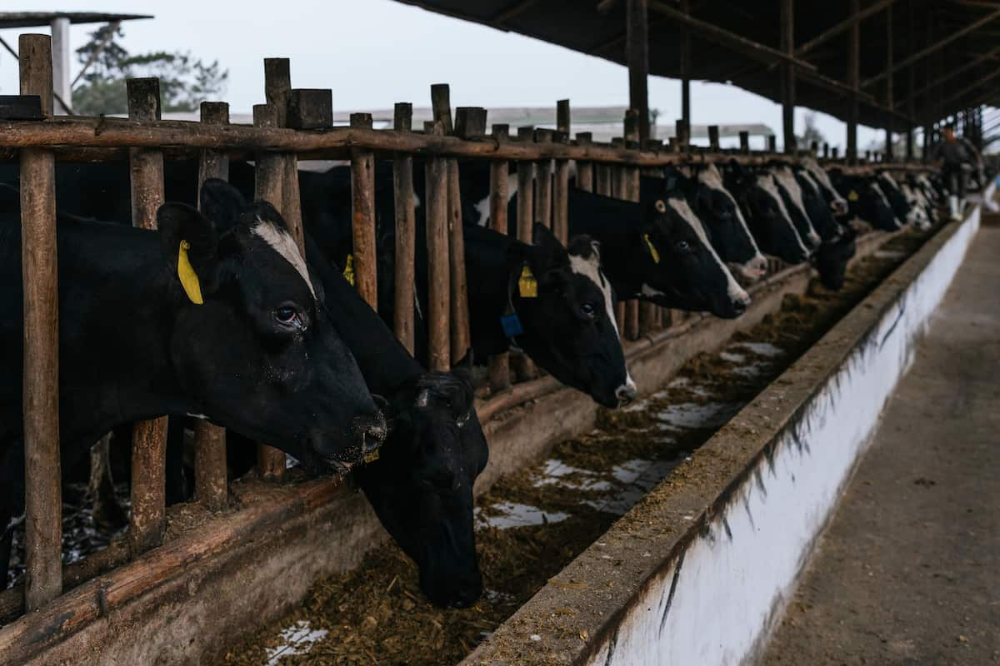
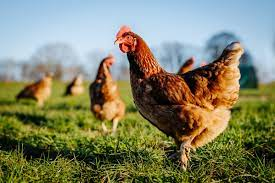
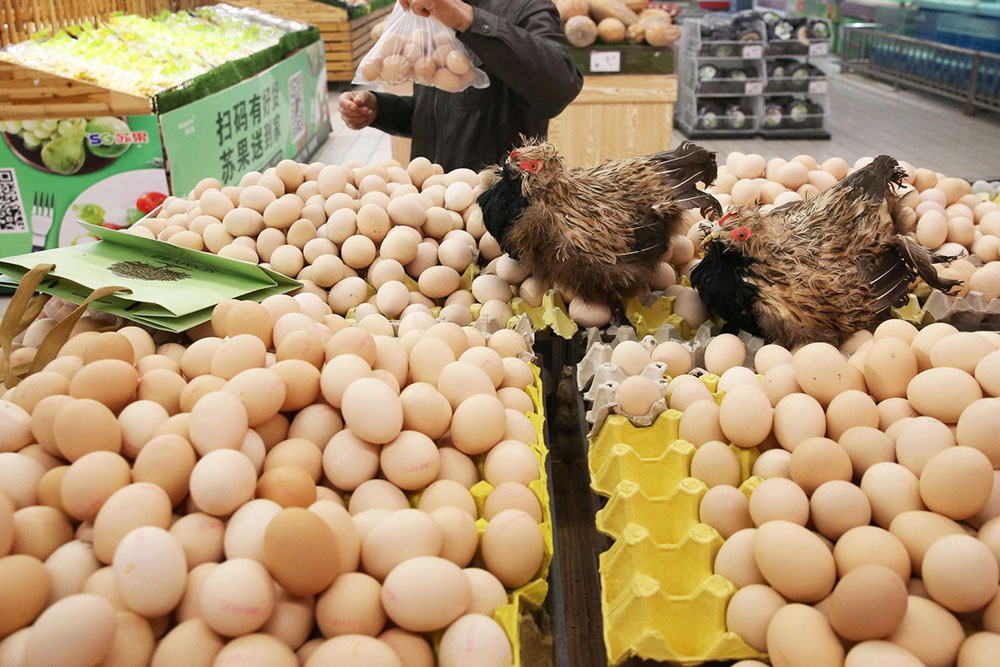
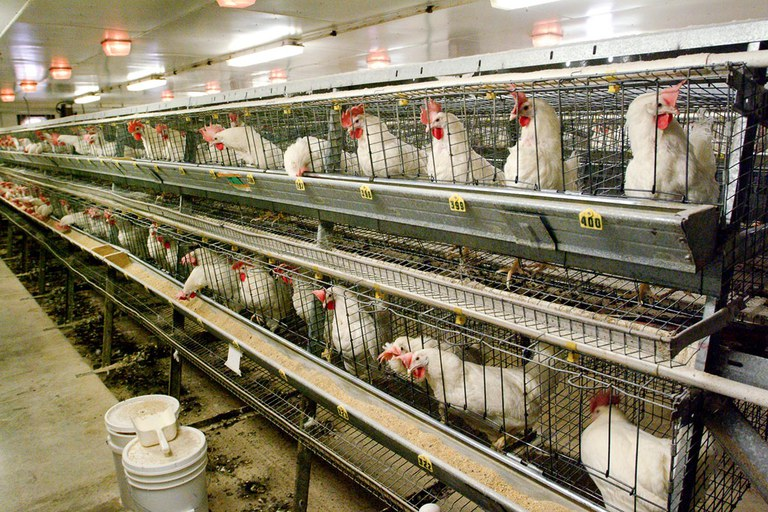
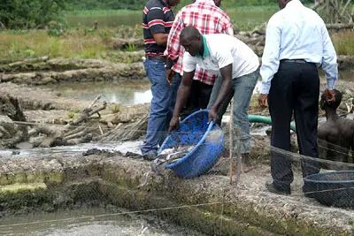
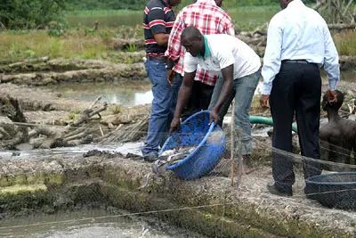

In the Agricultural industry, Poultry product is a prime example, which vertically integrates. We offer both Poultry meat production and Egg production. The Layers gives us eggs and from broilers, we can get meat.
The poultry business is praise able and beneficial activity in our company such as chickens, turkeys and guinea fowls
The fishing industry which harvests fish from fisheries can be divided into three main sectors: commercial, recreational or subsistence.
In our company, We mainly produce Catfish and Marketing of fish involves all the activities in the flow of fish or fish products from the farmer to the consumers.
Cattle are commonly raised as livestock for meat (beef or veal), for milk, and for hides, which are used to make leather. They are used as riding animals and draft animals. Another product of cattle is dung, which can be used to create manure or fuel.
Our farmers have a private cattle ranch in Oyo state with veterinary doctors on the ground for animal health and management
The factors responsible for this been the scarcity and high cost of this crops, climate change, increased competition between humans and animals for the feed ingredients especially maize and soybean and activities of traders buying and hoarding the grains.
Therefore; the total number of which is 800Kg divided by 25kg=32 bags of feeds. This also means you will need 32bags of feed to raise 100 birds from week 1-week 9 to make them weigh atleast 4kg per bird in 9 weeks.

BASED ON THE EXPERTISE OF JUBILEE AGRICULTURAL SERVICES, WE HAVE DEVELOPED AN INNOVATIVE LAKE BREEDING TECHNIQUE.
Our fish feed is also fortified with vitamins, minerals, essential proteins and oils – notably Omega 3.
This not only strengthens the immune system of the fish, but also provides a more nutritious product for our customers.
As stakeholders in the Livestock sector, our aim is to create an ecosystem where all major stakeholders in the livestock value chain can co-exist together to create a synergy.
Through this synergy, we are on the road to agricultural transformations.
 
